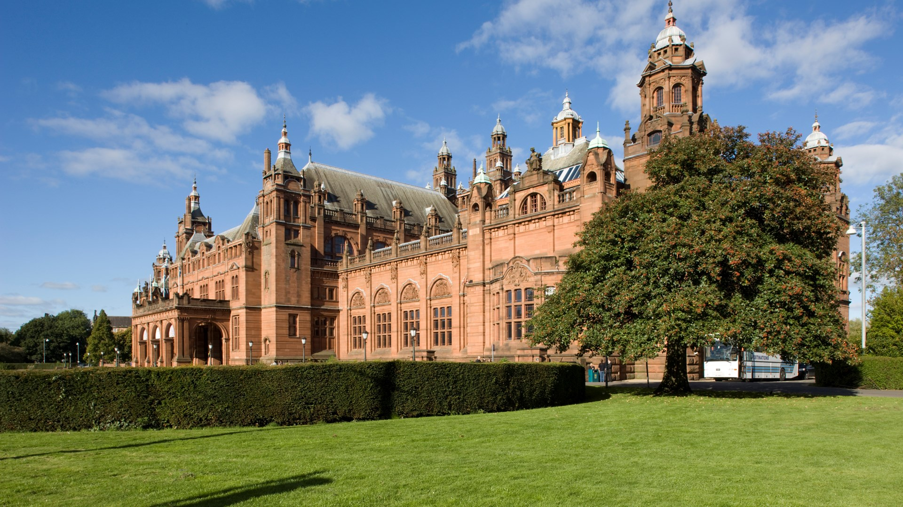
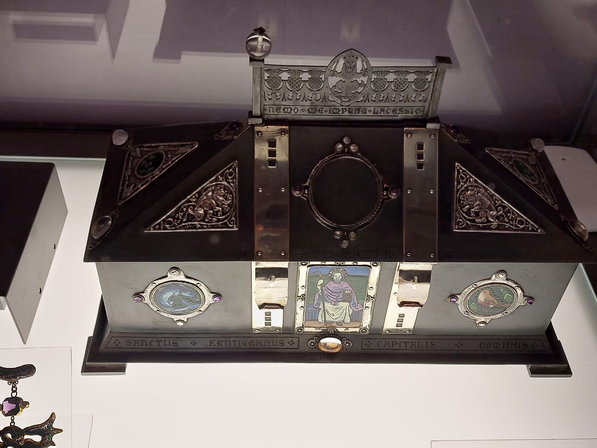

<!DOCTYPE html>
<html lang="en">
<head>
    <meta charset="UTF-8">
    <meta name="viewport" content="width=device-width, initial-scale=1.0">
    <title>weekendinglasgow</title>
</head>
<body>
    
</body>
</html>
  
  <link rel="stylesheet" href="styles.css">
  <br>
  <ul>
    <li><a href="index.html">Home</a></li>
    <li><a href="burrell.html">Burrell</a></li>
    <li><a href="galleryofmodernart.html">Gallery of Modern Art</a></li>
    <li><a href="riverside.html">Riverside</a></li>
    <li><a href="stmungos.html">St.Mungos</a></li>
    <li><a href="Kelvingrove.html">Kelvingrove Museum</a></li>
  </ul>
  
  <div class="row">
    <div class="column">
      
      
      
      
      
        
     
    </div>
    <div class="column">
      
      
      
      
      
      
    </div>
    <div class="column">
      
      
      
      
      
      

    </div>
   
   
  <p><strong>History:</strong>
Constructed in 1901, financed by the proceeds of the 1888 International Exhibition. It was originally named 
the Palace of Fine Arts.</p>
<p><strong>The Pipe Organ</strong></p>
<p>The pipe organ, installed for the 1901 Glasgow International Festival, remains in use today. A Glasgow 
councillor once stated that without it, "the art gallery would be a body without a soul." It is still played 
daily.</p>

<p><strong>Urban Myth</strong></p>
<p>A common myth suggests that Kelvingrove Museum was built back to front. However, it was intentionally designed 
to face into the park, as Glasgow was less urbanized in the late Victorian era.</p>

<p><strong>Exhibits</strong></p>
<p>Kelvingrove Museum houses world-class arms and armour exhibits spanning multiple historical periods. It also 
features artwork from legendary artists such as Van Gogh, Picasso, Dali, Renoir, and Cassatt.</p>

<p><strong>Accessibility & Transport</strong></p>
<p>Parking is available at the rear of the building and beside the Kelvinhall Centre.
The museum is fully accessible on all floors via rear-entry lifts.</p>
<p>Nearby transport options include:
Kelvinhall underground station (5-minute walk)
First Bus services 2 and 77 (stop at the front entrance)
Exhibition Centre and Partick rail stations (15-minute walk)</P>
  

 
  <footer>©All Rights Reserved</footer>
</div>
<div class="logo2">
  
</div>


</head>
<body>
